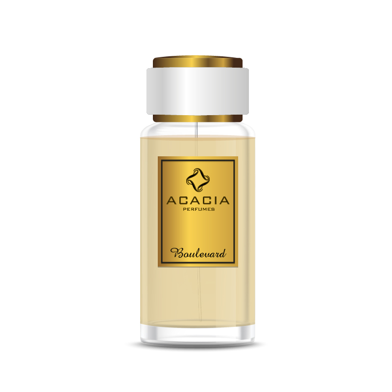

WELCOME TO NATURE PERFUME
ACACIA PERFUME.
ACACIA PERFUME
- Acacia has a long tradition in perfumery: it was first used in making incense, and symbolised resurrection and immortality. (Egyptian mythology linked the acacia tree with the tree of life, described in the Myth of Osiris and Isis.)
You may be more familiar with it as mimosa: those fabulous yellow pom-pom flowers which look delicate, but fill a room with their dreamy sweetness in minutes. The bark, roots and resin are all still used to create incense for rituals, in Nepal, India and China (including Tibet). And acacia/mimosa’s used in mainstream perfumer, too: the scent has warm, honey, iris-like, powdery and balsamic qualities, which enrich the complexity of fragrances. (Aromatherapeutically, acacia is said to have properties that help to relieve stress and depression, FYI.)
Acacias are pod-bearing shrubs and trees now native mostly to Australia and the Pacific. For centuries, aside from perfumery, the acacia tree has been used for many different purposes from medicinal to ornamental. The seeds and fruit are edible and used in many cuisines and soft drinks, the bark produces a gum that is used as a stabiliser (gum Arabic) and in the production for printing and ink; and the timber is used in furniture making.
An all-round useful ingredient, and a dreamily-scented one at that.
|

|